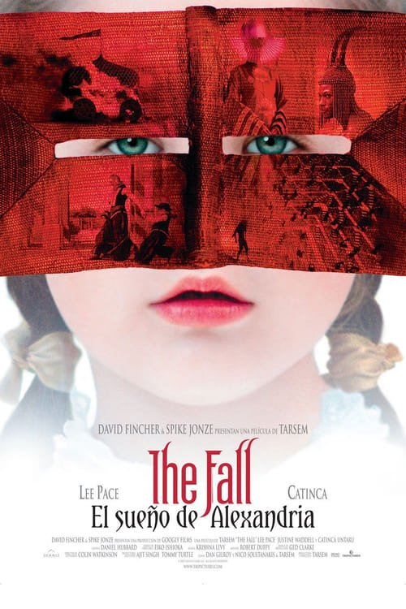

The Fall: El sueño de Alexandria (2006)
Sinopsis Rápida
Un ilusionista herido en un hospital cuenta cuentos fantásticos a una niña para ayudarla a escapar de su realidad. ¿Pero cuál de las dos realidades es la verdadera?
Sinopsis Detallada
En un hospital, Roy Walker, un ilusionista herido, encuentra una inesperada audiencia en Alexandria, una niña que se recupera de una caída. Para animarla, Roy le narra una historia épica de fantasía, llena de héroes, villanos, y una princesa atrapada. La línea entre la fantasía y la realidad se difumina, mientras Alexandria se ve envuelta en el mundo mágico de Roy, paralelamente a su propia dura recuperación. La película explora temas de escapismo, la importancia de las historias y la curación a través de la imaginación.
¿Por qué tenés que verla?
{{PUNTOS_CLAVE}}Idea Extra
Análisis del simbolismo y la iconografía visual en la película de Tarsem Singh.
{{CONTENIDO_RELACIONADO}}